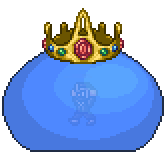
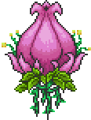
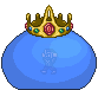
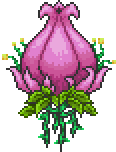
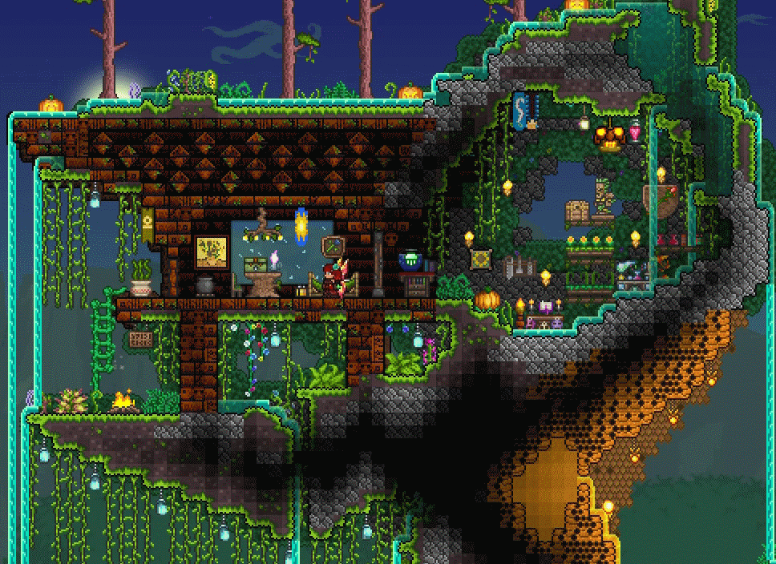
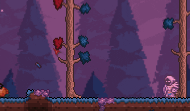
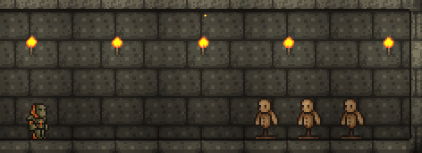
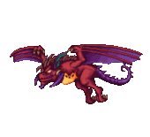
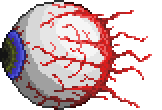

테라리아는?
테라리아는 2D의 단면화된 시야를 배경으로 캐릭터가 움직이는 3인칭 게임입니다. 아이템이 매우 다양하고 환상적인 요소가 담겨져 있는 RPG 게임형태를 띄고 있습니다. 유한한 맵에서 다양한 건축 블록과 아이템으로 나만의 세계를 꾸미고, 다양한 NPC들을 만나볼 수 있으며, 강력한 보스들을 처치할 수 있습니다. 또한, 특정 조건을 만족하면 일어나는 특별한 이벤트도 찾아볼 수 있습니다.
집 짓기
집을 지을 때는 2D라는 특징 덕분에 간단한 편입니다. 적절히 사각형으로 지으면 되지만 자신만의 독특한 집을 짓는 것도 게임 속 재미중 하나입니다. 집의 지형지물이 되는 블록과 2D의 배경이 되는 벽을 설치하는 식으로 집을 짓게 되는데, 블록과 벽타일의 종류가 수백 가지나 되며, 추가로 페인트나 특수 블록으로 더 다양한 색감과 질감을 낼 수 있습니다.

땅 위에 짓는 것뿐만 아니라 자연지형 속에도 집을 지을 수 있습니다.
전투와 무기
테라리아는 전투의 비중이 높습니다. 낮에는 슬라임을 잡아 젤을 얻어 횃불을 만들고, 밤에는 좀비 떼와 하늘을 날아다니는 악마의 눈들에게서 몸을 지켜야 합니다. 몬스터를 잡으면 재화를 일정량의 재화도 얻을 수 있습니다. 특정 조건을 만족하면 고블린 부대가 레이드를 오며, 지하 최하층으로 가게 되면 있는 지옥에서는 악마들과 싸우게 됩니다. 이외에도 여러 보스 몬스터가 등장하며, 이들을 잡아야만 얻을 수 있는 아이템이 있어 반드시 잡아야 합니다. 장비에 따라 차이가 많이 나므로 더 좋은 무기를 얻는 것이 중요합니다.


